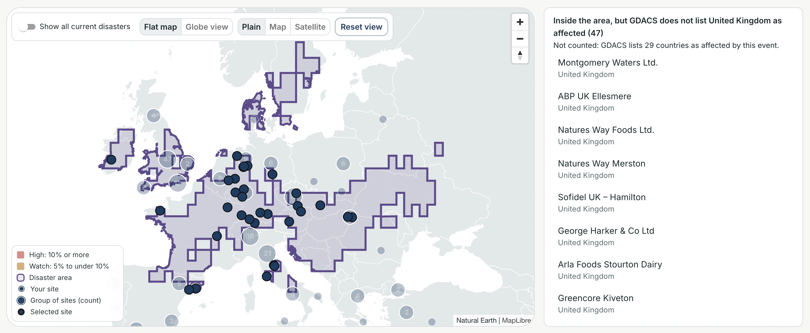

Supplier risk map
The Supplier risk map shows where a company's supplier sites are concentrated, which owners hold many, and which are in a current disaster area.
It is for the company's procurement and risk team; the examples use the public supplier lists of adidas, Nike and Amazon.
Captured 3 Oct 2026, 13:47 UTC, with disaster data from 12:38 UTC. Disaster data is live, so areas and counts will differ on another day.
1Overview adidas
 1Pick a company: every number updates2When disaster data was last read3The answer in one sentence4Click a card to highlight its sites
1Pick a company: every number updates2When disaster data was last read3The answer in one sentence4Click a card to highlight its sites
The top bar holds the company, the time of the last disaster check, Check for new disasters (not clicked here) and three pages: Risk map, Upload a supplier list and Company network. Below it, the summary sentence and three cards answer where adidas is exposed.
2The map adidas
 1Show all disasters, globe, style, reset2226 sites here: click to zoom in3High: 10% or more of workers4Drought area: 17 of your sites
1Show all disasters, globe, style, reset2226 sites here: click to zoom in3High: 10% or more of workers4Drought area: 17 of your sites
Countries at High are red and at Watch amber, nearby sites are grouped with their count, and disaster areas are outlined in purple. The legend at the bottom left explains each colour and symbol. Clicking a site, a country or a disaster area opens its details in the panel on the right.
3The site panel: PT. Paxar Indonesia Nike
 1Owner company, from Open Supply Hub2Not inside a current disaster area3GLEIF parent, once a person confirms4The selected site on the map
1Owner company, from Open Supply Hub2Not inside a current disaster area3GLEIF parent, once a person confirms4The selected site on the map
A site's panel lists its owner, warnings, disaster status, the lists it is on and its parent company. It was opened from Nike's Countries table: Indonesia, then this site. It is on Nike's February 2024 list and has about 334 workers.
4The owner panel: POU CHEN adidas
 17.4% of workers: Watch level29 sites in 4 countries3Its sites, highlighted on the map
17.4% of workers: Watch level29 sites in 4 countries3Its sites, highlighted on the map
Opened by clicking POU CHEN in the Owner companies table below the map. It shows what share of adidas's suppliers' workers the owner holds, and where its sites are.
5The disaster panel: the drought Amazon.com, Inc.

1Inside the area, but not counted2UK: not on GDACS's affected list3The drought's affected areaOpened from the Disasters now card, then scrolled down. These 47 sites in the United Kingdom are inside the drought's area but not counted: GDACS lists 29 countries as affected, and the United Kingdom is not one of them.
6How these numbers are worked out adidas
 1Change the High threshold2Change the Watch threshold3Each number shows its base
1Change the High threshold2Change the Watch threshold3Each number shows its base
Shares use suppliers' workers because workers are known for at least 90% of sites (719 of 766 here). Code only Changing a threshold recalculates the country and owner levels; it is not saved.
7Upload: Amazon's file, pre-filled
 13798 rows naming 980 lists2Company found on every row3Latest list ticked and marked current
13798 rows naming 980 lists2Company found on every row3Latest list ticked and marked current
Choosing an Open Supply Hub file (here data/demo/amazon.csv) fills in the company and ticks its newest list; personal contact columns (claim_*) are dropped. Nothing is loaded until the lists and the name are checked and loaded, which was not done here.
8Company network: PT. Paxar Indonesia confirmed Nike
 1Confirm or reject each candidate2Confirmed by a person3Solid line: a confirmed match4GLEIF parent: AVERY DENNISON CORPORATION
1Confirm or reject each candidate2Confirmed by a person3Solid line: a confirmed match4GLEIF parent: AVERY DENNISON CORPORATION
A match between an Open Supply Hub name and a GLEIF company stays a candidate (dashed line) until a person confirms it. Only then does its parent company show, here and in the site panel (figure 3).
9The Satellite style adidas
 1Satellite: EOX's 2016 imagery2Credits always shown in full3Shading and sites stay on top
1Satellite: EOX's 2016 imagery2Credits always shown in full3Shading and sites stay on top
The Satellite style shows EOX's 2016 imagery under the same shading, sites and panel; Plain and Map are the other styles. Code only If EOX does not respond, the map goes back to Plain with a one-line notice.
Good to know
- Disaster alerts come from GDACS and are automatic (figure 1).
- A site inside a disaster area is not counted when GDACS does not list its country as affected (figure 5).
- Every number shows its base, for example "Owner known for 551 of 766 sites" (figures 1 and 6).
- A GLEIF match is a candidate until a person confirms it; parent companies show only after that (figures 3 and 8).
- Lists are dated: the site in figure 3 is on Nike's February 2024 list, and Amazon's own lists in figure 7 are dated 2022, 2023, 2024 and 2026.